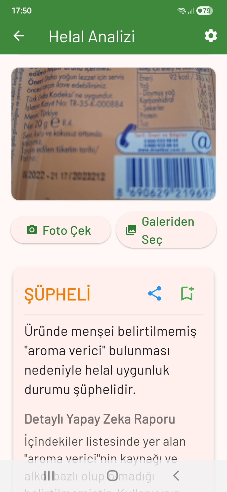

Sağlıklı Gıda Analizi
Yetişkin ve çocuklara özel sağlıklı gıda filtrelemeyi sağlayan güçlü analiz aracı. İçeriklerin genel sağlık skorunu anında görün.

Alerjen Analizi
Alerjisi olanlara özel analiz aracı. Etiketlerde gizlenmiş veya çapraz bulaşma riski taşıyan potansiyel alerjenleri anında tespit edin.

Vegan / Vejetaryen Analizi
Vegan ve vejetaryen hassasiyetleri olanlara özel analiz aracı. Hayvansal kaynaklı tüm içerikleri saniyeler içinde filtreleyin.

Ambalaj Tutarlılık Analizi
Ambalajların üzerindeki sloganların kontrolünü sağlayın. Ön yüzdeki vaatler ile arka yüzdeki gerçekleri kıyaslayın.

Helal Analizi
Helal hassasiyetleri olanlar için analiz aracı. Şüpheli katkı maddelerini ve uygunsuz bileşenleri hızla tarayın.

Güvenli Listem
Tüm analizleri ürün ve marka adına göre saklayıp güvenli bir alışveriş listesi oluşturun. Tekrar tarama yapmaya gerek duymadan favori ürünlerinize ulaşın.